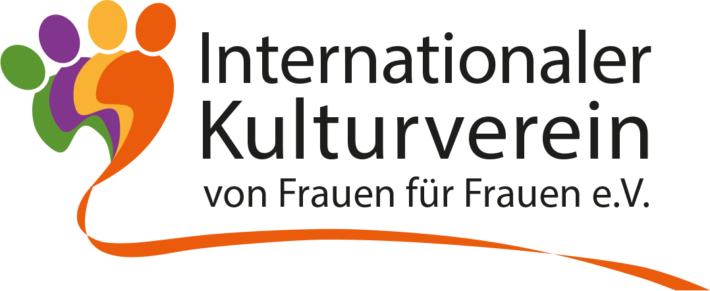

<div class="container-fluid content-association">
    <div class="row">
        <div class="col-xs-12 col-md-3 col-md-offset-1">
            <div class="logo">
                
            </div>

            <div class="header">
                <h1>Internationaler Kulturverein<br>von Frauen für Frauen e.V.</h1>

                <h2 class="subhead">
                    Mit und für<br>Menschen verschiedener Nationalitäten
                </h2>

                <p class="headquarters">
                    Sitz des Vereins ist Lingen (Ems)<br>Landkreis Emsland
                </p>
            </div>
        </div>

        <div class="col-xs-12 col-md-6">
            <div class="highlight-box">
                <p>
                    Kunst- und Kreativmarkt Winterzauber (2015)
                </p>

                <p>
                    Zum 5. Mal in diesem Jahr wieder am 2. Adventswochenende
                    4. - 6. Dezember 2015
                </p>

                <p><a href="/aktuelles">Weitere Details</a></p>
            </div>

            <h2>Die multikulturelle Gesellschaft</h2>
            <p>
                Die multikulturelle Gesellschaft ist auch in unserer Region
                Realität. Wir sehen sie als Bereicherung, als Potential für ein
                achtvolles Leben miteinander. Wir wollen Internationalität leben
                und den kulturellen Austausch stärken.
            </p>

            <p>
                <a href="/downloads/Internationaler Kulturverein_FLYER_final-5.pdf">
                    Download Flyer zum Verein (PDF, 1MB)
                </a>
            </p>

            <h2>Unser Ziel</h2>
            <p>
                Unser Ziel ist es, aufgeschlossen zu sein, voneinander zu
                lernen, uns auf Augenhöhe zu begegnen und im gemeinsamen
                gesellschaftlichen Engagement mit unseren Mitgliedern und der
                Bevölkerung
            <ul>
                <li>
                    das Verständnis für die jeweils andere Kultur zu fördern
                </li>
                <li>
                    die Integration der verschiedenen Religionen und ethnischen
                    Gruppen im gegenseitigen Respekt zu verbessern
                </li>
                <li>
                    die Vernetzung mit Gruppen und Institutionen in unserer
                    Stadt zu stärken.
                </li>
            </ul>

            <h2>Unsere Projekte</h2>
            <p>
                Dafür organisieren wir Veranstaltungen, Projekte und Events in
                den Bereichen Bildende Kunst, Theater, Musik, Literatur sowie
                Film etc. und sammeln Ideen in unserer Kontakt- und
                Austauschbörse.
            </p>
        </div>
    </div>
</div>
